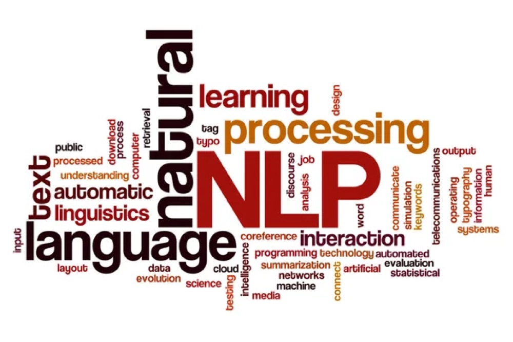

Master of Data Science
Monash University, Melbourne, Australia
Major - Big Data
THE DATA ARCHITECT
Senior Data Engineer
Data Governance Engineer
Azure / Microsoft Fabric /
Databricks / Data Governance
I am a Data Engineer / Machine Learning Engineer by profession, with a Master’s degree in Data Science from Monash University.
My expertise includes working with large data sets to develop analyses that align with the company’s goals. In my previous roles, I created visualisations to communicate key business insights to shareholders from multiple teams.
I excel at coming up with technical data solutions to help solve real-world business issues while effectively communicating these analyses, predictions, and ideas with the team and various shareholders to quickly come up with scalable prototypes to get a clear measure of growth.
Garnering work experience from the corporate firms of all sizes, I’m a critical thinker driven by the fascination of technology with an urge to create a positive impact on businesses. Some of the domains I've worked in are Energy & Gas, Healthcare, Financial Services, and Insurance.
When I'm not breaking my head on fixing bugs in my code, you could find me playing Bass Guitar, Football, or keeping up to date on geopolitics. I am also deeply curious about the financial world, and actively invest in the growing Indian market.
Monash University, Melbourne, Australia
Major - Big Data
Vellore Institute of Technology, Vellore, India
Major - Data Science
Brennan Australia, Melbourne
• Developed Infrastructure as Code (IaC) using Bicep templates to deploy Azure Databricks, Azure Storage accounts, and Azure Key Vault with private endpoints. Integrated Azure Repos and Azure DevOps deployment pipelines to automate infrastructure delivery through CI/CD.
• Built an end-to-end data platform on Azure Databricks using YAML-configured pipelines and file-arrival triggers on volumes to orchestrate notebook execution. Implemented a medallion architecture for data ingestion, transformation, cleaning, and aggregation, supporting AI/BI dashboards with Genie capabilities across non-production and production environments.
• Implemented platform CI/CD using Declarative Automation Bundles (formerly Databricks Asset Bundles). Used YAML-based configurations and deployment pipelines to automatically deploy platform changes on merge.
NTT Data Australia, Melbourne
• Massively contributed to the Data Engineering track of the Modern Data Platform initiative at Toyota Motor Corporation Australia (TMCA), building scalable, metadata-driven pipelines by leveraging the dynamic query mapping (DQM) technique on Microsoft Fabric's Data Factory. Developed end-to-end data ingestion workflows using Data Factory to process large CSV, XML, SAP, Oracle, Flat Files and SQL Database sources. Implemented Medallion architecture on the Data Warehouse with Bronze (raw replica), Silver (cleaning + transformations), and Gold (reporting views) layers. Enabled downstream semantic models and Power BI reporting by designing optimized data flows across the layered architecture.
• Led the Microsoft Purview implementation as part of the Modern Data Platform initiative at Toyota Motor Corporation Australia (TMCA), enabling enterprise-wide data governance. Built a scalable Python-based codebase entirely within Microsoft Fabric notebooks to automate metadata ingestion and lineage mapping. Designed and deployed pipelines capturing table and column-level lineage across SAP ECC and Microsoft Fabric layers. Created custom entity types using PyApacheAtlas and automated glossary term mapping and classification to enhance data discoverability and compliance.
• Played a key role at Australian Community Service Organisation (ACSO) on Databricks to modernise their data engineering ecosystem by implementing Autoloader-based ingestion pipelines and Change Data Capture (CDC) patterns for efficient incremental processing. Designed and delivered a complete Medallion Architecture, ensuring scalable, high-quality data flows.
• Partnered with stakeholders across the Department of Health to analyze data sources and enforce secure access through Microsoft Purview's Identity Access Management. Contributed to the development of a comprehensive data governance plan, outlining project goals, resource needs, and an implementation roadmap to strengthen data security and compliance.
Mott MacDonald Australia, Adelaide
• Played a pivotal role in the advancement of Moata, an in-house Advanced Analytics proprietary tool hosted on Azure, by contributing to its development. Orchestrated the integration of the platform with key technologies such as Python, GitHub Actions, Logic Apps, and Power BI Dashboards. This integration facilitated a sophisticated data-driven approach to address Geo-spatial Time-series business use cases, encompassing critical areas like Network Capacity and Workload, Electricity Demand and Consumption, and Predictive Maintenance. Notably, the tool proved instrumental in proactively identifying faults well before they could manifest.
• Demonstrated proficiency in developing Geospatial solutions using Python on ArcGIS Pro, strategically leveraging Python toolboxes to seamlessly interact with Moata. This involvement encompassed essential functions such as uploading, downloading, and updating Geospatial assets. The application of Python in this context showcased a nuanced understanding of both Geospatial technology and data management within the Moata framework.
• Facilitated effective communication and collaboration among diverse Engineering teams, including Electrical, Mechanical, Structural, and Design, to comprehend and compile Business Requirements for Data-Driven Solutions. Led the initiative to evaluate the feasibility of Business Cases, ensuring alignment with organizational objectives. This role required adept coordination to bridge technical and business perspectives, fostering the development of innovative solutions grounded in comprehensive business understanding.
KPMG Australia, Adelaide
• Spearheaded the development of a Proof of Concept (POC) in Tableau with a focus on forecasting metrics such as Revenue and Sales for a prominent convenience store flagship. The objective was to systematically identify suburbs with the highest retail growth potential, utilizing factors such as Population growth, Income growth, and Footfall. This data-driven approach aimed to provide actionable insights for strategic decision-making in expanding retail operations.
• Utilized Terraform to orchestrate the deployment of Infrastructure on Azure, demonstrating adeptness in ensuring a robust and scalable foundation. Pioneered the development of Data Pipelines using Azure Data Factory to streamline the integration of data from diverse sources. Employing an efficient data wrangling process, the curated data was seamlessly transferred to Azure SQL Data Warehouse for further processing. The comprehensive workflow incorporated Continuous Integration/Continuous Deployment (CI/CD) practices with Git integration, showcasing a commitment to operational excellence in an internal Proof of Concept for a prominent logistics company.
Enzen Australia, Adelaide
• Engineered comprehensive Data Pipelines to efficiently ingest, integrate, clean, and process data from multiple sources, managing the volume of gas faults in the expansive network of Australia's largest Gas Infrastructure Group (AGIG). Leveraging Dataproc and BigQuery on Google Cloud Platform, the implemented pipelines showcased a robust and scalable solution for managing complex datasets.
• Innovatively designed and implemented an advanced Forecasting model on Google Cloud Platform using the PyTorch-based NeuralProphet library within Jupyter Notebooks. This initiative resulted in a noteworthy 32% reduction in field resource allocation costs. Subsequently, enhanced the model's efficacy by integrating it with an Autoregressive Neural Network, achieving an additional 17% reduction in field resource allocation costs.
• Conducted thorough Data Analysis on gas faults data, integrating the outcomes of the aforementioned forecasting model into a comprehensive Google Data Studio report. This end-to-end Predictive Modelling solution provided stakeholders with actionable insights and a holistic view of the gas network's performance.
• Operationalized the developed model on Google Cloud Platform using Docker containers and Crontab, establishing a fully automated Forecasting process. This implementation not only ensured the sustainability of the Predictive Modelling solution but also streamlined and optimized the forecasting workflow for ongoing operational efficiency.
Deloitte Australia, Melbourne
• Spearheaded the development and optimization of sophisticated Deep Learning models on TensorFlow, specializing in Time-Series Forecasting, Image Classification, Object Detection, and Natural Language Processing. Leveraging Convolutional Neural Networks (CNNs), Recurrent Neural Networks (RNNs), and Generative Adversarial Networks (GANs), these models were intricately crafted atop Apache Spark on Azure. The focus on diverse applications underscored a versatile skill set in harnessing cutting-edge technologies for varied data-driven tasks.
• Played an integral role within the Data Modernization team, contributing to the development of SSIS Data Pipelines, SSAS Cubes, and Power BI Reports within the Azure Data Factory framework. This collaborative effort aimed at enhancing data integration, analysis, and visualization capabilities, showcasing a commitment to modernizing data processes and facilitating informed decision-making within the organization.
KPMG India, Bengaluru
• Orchestrated end-to-end development solutions to establish a comprehensive Enterprise-wide Business Intelligence mechanism for Reporting. Utilized tools such as SQL Server Integration Services (SSIS), SQL Server Analysis Services (SSAS), and Power BI to seamlessly integrate and visualize data. This initiative aimed to empower the organization with robust reporting capabilities, fostering informed decision-making across various business units.
• Applied advanced Machine Learning Algorithms in R and Python to tackle intricate business challenges within the Predictive Analytics domain. The optimization of these algorithms demonstrated a commitment to leveraging data-driven insights for strategic decision-making, contributing to enhanced business outcomes.
• Innovatively designed and implemented a fully functional Business Process Mining Shiny application, serving as an in-house tool. This bespoke application showcased a nuanced understanding of business processes and data visualization, providing stakeholders with a powerful tool for process analysis and optimization.
Time-Series Forecasting
Computer Vision / Machine Learning
Data Analysis
Time-Series Forecasting
Time-Series Forecasting
Data Analysis
Data Analysis / Machine Learning
Big Data
web / visual
Machine Learning / Big Data

11Natural Language Processing / Machine Learning
Cloud platforms. Programming.
Analytics and machine learning.
Self-assessed proficiency
Shiivong has strong data engineering and analytics capabilities, with the ability to design and deliver robust solutions for complex business challenges. What sets him apart, however, is that he doesn't just focus on the technology—he takes the time to understand the underlying business problem, works closely with clients to uncover their challenges, and draws on both his experience and research to develop practical, well-considered solutions.
He is also excellent at communicating complex concepts in a way that clients can understand, ensuring they are aligned with the proposed solution before implementation begins. This collaborative and thoughtful approach builds confidence and leads to better outcomes.
Beyond his technical and consulting skills, Shiivong brings a consistently positive attitude to every engagement. He is dependable, calm under pressure, and someone you can trust as a safe pair of hands when delivering complex projects. I have thoroughly enjoyed working with Shiivong and would be happy to work with him again on future projects.
Principal Consultant, NTT Data Australia
Shiivong was a delight to manage. Always positive, hungry to learn and improve, his attitude was as good as one could hope for in a team member.
During his time with Mott MacDonald, Shiivong made great strides in transitioning the application of his fundamental technical knowledge from single use cases to scalable production-ready code that underpinned cloud deployments and unlocked high value outcomes for our infrastructure sector clients.
He made a significant and positive impact during his time at Mott MacDonald and will be missed.
Technical Director, Mott MacDonald Australia
Shiivong is an extremely proactive Data analyst with a good mix of technology and functional understanding.
I was extremely impressed by his effort and productivity within the team while working with him.
I wish Shiivong the best of luck with his future projects.
Senior Specialist Lead, Deloitte Australia
I rarely come across real talents who stand like Shiivong.
I had the pleasure of working with Shivong for product development, collaborating on several aspects of different tools.
His perseverance to handle such heavy lifting in earlier phases of his career made a huge impact on the faster solution development.
Process Mining being a niche skill set, he was able to grasp the subject and played a pivotal role in bringing the tool at a significant mature stage.
As a team member, Shiivong earns my highest recommendation, a stellar performer indeed.
Manager, KPMG India
Top notch attitude, great problem solving skills, ability to grasp things at drop of a hat and a fun person to work with, Shiivong brings a lot of dynamism, creativity and dedication to the table.
I worked with Shiivong for almost a year in very critical project of Healthcare services client for BI implementation. He learned SSIS, SSAS and Power BI in no time and started handling a critical module in project independently. He owned the module end- to- end, right from requirement gathering, logic/ source system understanding, implementing and designing dashboards. Shiivong received appreciation from all client senior/executive management for his amazing work for the executive dashboard.
Shiivong went out of his way and leveraged his R and Shiny skills to help a new solution development in KPMG analytics practice while handling the strict deadlines at client project deliverable. His contribution during nascent stages of the solution, helped team a lot to develop it further.
I wish Shiivong a very bright career and best wishes for his future endeavors.
Data & Analytics Manager, Unilever
Shiivong is a hardworking and professional person. He is a quick learner and has a right attitude towards learning.
He joined as an intern in KPMG and continued as analyst.
He independently completed 4 modules of a project with minimal issues.
He picked up MSBI skill in very short time and has good knowledge in SQL as well.
As a senior, I have reviewed his work and it was good to see that his work is praiseworthy.
Besides MSBI, he worked on R analytics side by side for process mining. Overall he is a good person.
Azure Data Engineer, Nokia
DP-700
• Implement and manage an analytics solution.
• Ingest and transform data.
• Monitor and optimize an analytics solution.
Verify certification
DP-600
• Subject matter expertise in designing, creating, and managing analytical assets, such as semantic models, warehouses, or lakehouses.
• Secure and maintain analytics assets.
• Implement and manage semantic models.
Verify via Credly
DP-500
• Help collect enterprise-level requirements for data analytics solutions that include Azure and Power BI.
• Advise on data governance and configuration settings for Power BI administration.
• Monitor data usage.
• Optimize performance of the data analytics solutions.
Verify via Credly
Databricks
• The Databricks Accredited Lakehouse Platform Fundamentals accreditation exam will test your knowledge about fundamental concepts related to the Databricks Lakehouse Platform. Questions will assess how well you know about the platform in general, how familiar you are with the individual components of the platform, and your ability to describe how the platform helps organizations accomplish their data engineering, data science/machine learning, and business/SQL analytics use cases. Please note that this assessment will not test your ability to perform tasks using Databricks functionality. Instead, it will test how well you can explain components of the platform and how they fit together.
See certification
DP-203
• Azure Data Engineer Associate certification validates the skills and expertise in integrating,
transforming, and consolidating data from various structured and unstructured data systems into
structures that are suitable for building analytics solutions. Candidates have a solid knowledge of data processing
languages, such as SQL, Python, or Scala, and they need to understand parallel processing and data architecture
patterns.
Verify via Credly
DeepLearning.AI
• Use logistic regression, naïve Bayes, and word vectors to implement sentiment analysis, complete analogies, translate words, and use locality-sensitive hashing to approximate nearest neighbors.
• Use dense and recurrent neural networks, LSTMs, GRUs, and Siamese networks in TensorFlow and Trax to perform advanced sentiment analysis, text generation, named entity recognition, and to identify duplicate questions.
• Use dynamic programming, hidden Markov models, and word embeddings to autocorrect misspelled words, autocomplete partial sentences, and identify part-of-speech tags for words.
• Use encoder-decoder, causal, and self-attention to perform advanced machine translation of complete sentences, text summarization, question-answering, and build chatbots. Models covered include T5, BERT, transformer, reformer, and more!
See certification
DeepLearning.AI
• Best practices for TensorFlow, a popular open-source machine learning framework to train a neural network for a computer vision applications.
• Build natural language processing systems using TensorFlow.
• Handle real-world image data and explore strategies to prevent overfitting, including augmentation and dropout.
• Apply RNNs, GRUs, and LSTMs as you train them using text repositories.
See certification
IEEE Xplore
• Co-authored a paper on Machine Learning on Imbalanced Data in Credit Risk, published in
an IEEE paper publication to address the problem of privacy in Data Mining and to suggest a
simple yet effective way to preserve the privacy by hiding the sensitive data before using Data
Mining algorithms.
To access the paper, See publication
International Journal of Computer Applications
• Co-authored a paper on Data Mining on factors that affect a students' performance at school.
To access the paper, See publication
Melbourne, Victoria, Australia 3000